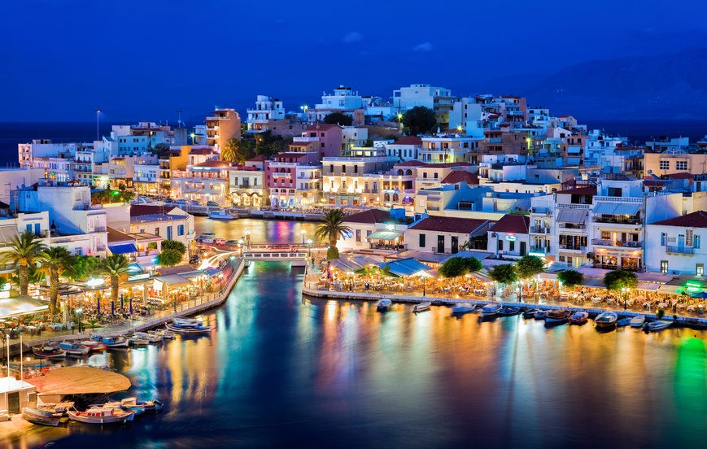
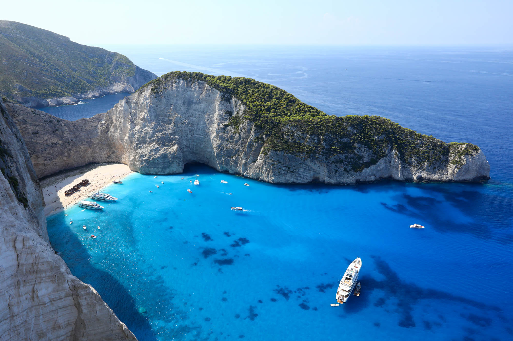

PONTOS TURÍSTICOS DA GRÉCIA
Acrópole de Atenas

A Acrópole de Atenas é um dos pontos turísticos mais icônicos da Grécia e do mundo. Trata-se de uma colina rochosa situada no centro de Atenas, a capital grega, e abriga uma série de antigas estruturas arquitetônicas, incluindo o famoso Partenon. A Acrópole é um importante símbolo da cultura grega antiga e um Patrimônio Mundial da UNESCO.
Creta
Creta é a maior das ilhas gregas e um destino turístico muito popular devido à sua beleza natural deslumbrante, história rica e cultura única. De acordo com a mitologia Grega, foi em Creta que Zeus nasceu.
Navagio Beach
A Praia Navagio, também conhecida como Shipwreck Beach, é um dos pontos turísticos mais famosos da ilha grega de Zakynthos (ou Zante). Esta praia é conhecida por sua beleza cênica e pela presença de um navio naufragado na areia, o que a torna uma das praias mais icônicas da Grécia e uma das mais fotografadas do mundo.